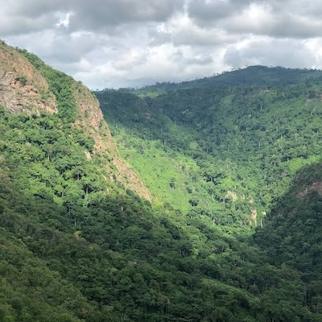

Ghana's geography and Brief History
Brief History
Before the Europeans arrived in search of gold, the west coast of Africa was part of an ancient trade route. In 1471, Portuguese traders came ashore and noticed that the local people wore gold jewelry
People from Portugal, Denmark, the Netherlands, Germany, and Britain came to the Gold Coast to search for gold. The British took control of the country in the 20th century and declared the Gold Coast a colony of the British Empire.
In 1957, the Gold Coast gained its independence from Britain and became known as Ghana. After many corrupt governments, Ghana’s new leader in 1981, Jerry Rawlings, vowed to stop corruption. Democracy involving many parties started in 1992 when a new constitution was adopted.
Ghana is one of the leading countries of Africa, partly because of its considerable natural wealth and partly because it was the first black African country south of the Sahara to achieve independence from colonial rule.
Ghana's economy is one of the fastest-growing in Africa, with key sectors including agriculture, mining, and services. The nation is a leading producer of cocoa, which plays a vital role in its economy and global markets. Ghana is also renowned for its warm hospitality.
Ghana's geography
Ghana is a country in west African. It shares borders with Togo, Côte d’Ivoire, Burkina Faso and the Gulf of Guinea.
It was originally made up of ten regions. In 2018, these regions were further divided into sixteen regions. They are Ahafo, Ashanti, Bono, Bono east, central, Eastern, Northern, Northeast, Oti, Savannah, Upper east, Upper west, Volta, Western, Western north with Greater Accra being the capital region.
Geographically, Ghana features a mix of coastal plains, forested savannas, and mountainous regions, contributing to its rich biodiversity.
The terrain consists of desert mountains with the Kwahu Plateau in the south-central area. Half of Ghana lies less than 152 meters (499 ft) above sea level, and the highest point is 883 meters (2,897 ft). The 537 kilometers (334 mi) coastline is mostly a low, sandy shore backed by plains and scrub and intersected by several rivers and streams, most of which are navigable only by canoe.
A tropical rain forest belt, broken by heavily forested hills and many streams and rivers, extends northward from the shore, near the Ivory Coast frontier. This area, known as the "Ashanti," produces most of Ghana's cocoa, minerals, and timber. North of this belt, the elevation varies from 91 to 396 meters (299 to 1,299 ft) above sea level and is covered by low bushes, park-like savanna, and grassy plains.
There are four distinct geographical regions. Low plains stretch across the southern part of Ghana. To their north lie three regions—the Ashanti Uplands, the Akwapim-Togo Ranges, and the Volta Basin. The fourth region, the high plains, occupies the northern and northwestern sector of Ghana. Like most West African countries, Ghana has no natural harbours. Because strong surf pounds the shoreline, two artificial harbours were built at Takoradi and Tema (the latter completed in 1961) to accommodate Ghana's shipping needs.
About 59.2 percent of the country's population lived in urban areas in 2023. The urban coastal region has historically had the most contact with European influences. The country's largest city in 2023 was Kumasi, with a population of 3.768 million. The second largest city was the capital, Accra, which boasted 2.66 million people. Other large cities include Sekondi-Takoradi and Cape Coast.
In the coastal region, the main ethnic groups include the Ewe (12.8 percent of the total population), the Ga-Dangme (7.1 percent), and the Ahanta, among others (2021 estimates). Traditionally, the coastal region had been split into various ethnic kingdoms, and its commerce was based in fishing.
The ethnic groups that inhabit the agricultural forest region include the Akan (45.7 percent of the total population; 2021 estimates), the Ewe, the Ashanti, the Akwapim, the Akim, and the Kwahu. Much of the food Ghanaians eat comes from this region. Though there are fewer cities, the population density is greater around the region's cocoa growing areas.
The Mole-Dagbani (18.5 percent of the total population) live in the northern savannah region. Other Ghanaian ethnic groups include the Gurma (6.4 percent), Guan (3.2 percent), Grusi (2.7 percent), and Mande (2.0 percent; 2021 population estimates).
There is an overlap between the forest and northern savannah regions, often called the "middle belt" of the country. This area is known for being a difficult place to settle, and is prone to outbreaks of disease.

Geography Pictures of Ghana
